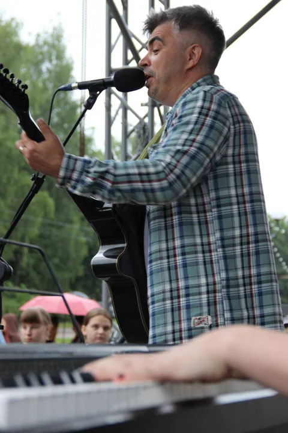
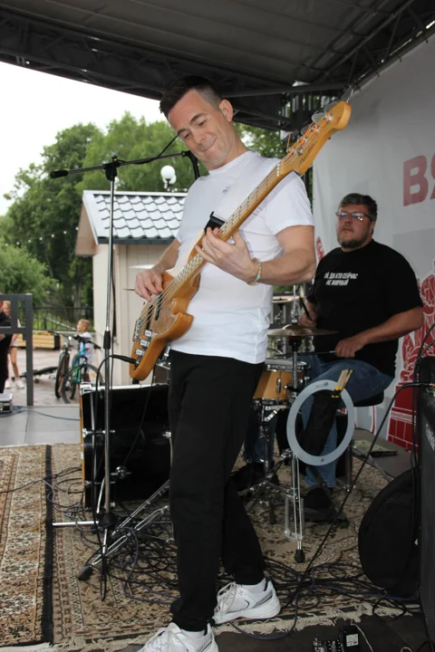
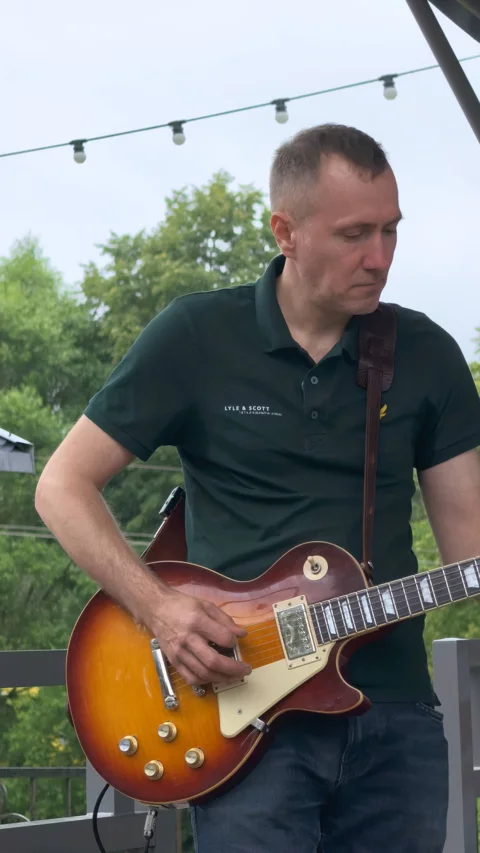
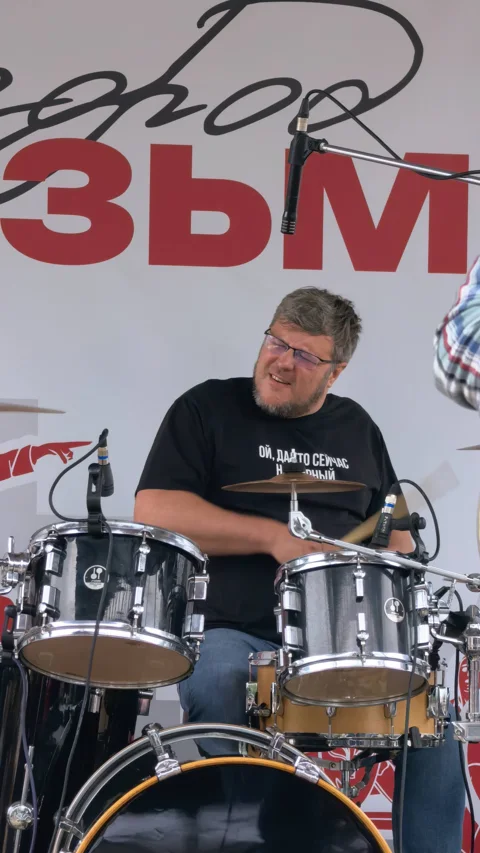

Наши песни. Новое звучание.
Песни, написанные 25–30 лет назад, звучат сегодня по-новому.
Б.О.Н. / ПОП-РОК С ИСТОРИЕЙ
Первый сольный концерт
после возвращения.
Москва / бар «БАРДО»
Мест немного. Заполните форму
для получения пригласительного.
С 1996
Вязьма Москва / Музыка продолжается
01 / КОНЦЕРТ
26.12.2026 · СУББОТА26 декабря собираемся в «БАРДО», чтобы стать частью нашего творческого вечера и зарядиться новогодним настроением в преддверии праздников.
Будут наши песни, знакомые мелодии и живой звук — всё, ради чего мы снова вышли на сцену.
АФИША КОНЦЕРТА
26 декабря 2026 · 15:00
Москва · бар «БАРДО»
Нажмите на афишу,
чтобы рассмотреть её целиком.
Песни, написанные 25–30 лет назад, звучат сегодня по-новому.
Небольшой перерыв — время перевести дух
6–7 каверов, которые хочется услышать вживую.
02 / О ГРУППЕ
ВЯЗЬМА · ШКОЛА №6У каждой группы есть начало.
У нашей — школьные друзья.
В 1996 году в школе №6 города Вязьмы появилась группа «Б.О.Н.». Были первые песни, городские концерты и фестивали. Потом — большой перерыв.
Спустя 17 лет мы снова собираемся вместе: с новым звучанием, новым составом и прежней любовью к музыке. Поп-рок с душой 90-х и нулевых.
Состав изменился.
Любовь к музыке осталась.
ЛИЧНЫЙ АРХИВ
Репетиции, друзья и первые сцены.
Наша история — в фотографиях.
03 / СОСТАВ
ПЯТЬ ХАРАКТЕРОВ. ОДИН ЗВУК.
01 / ВОКАЛНаш голос и вдохновитель

02 / БАС-ГИТАРАБас-гитара

03 / СОЛО-ГИТАРАГитарный характер «Б.О.Н.»

04 / УДАРНЫЕПульс нашей музыки
Новое поколение группы
Опыт и новое поколение: Таисия — дочь Руслана и студентка музыкального института.
04 / МОМЕНТЫ
БЕЗ ФИЛЬТРА МЕЖДУ НАМИ И ВАМИСцену лучше почувствовать.
А пока — несколько кадров.
Нажмите на кадр, чтобы рассмотреть ближе
05 / ДО ВСТРЕЧИ
МОСКВА, МЫ ЕДЕМПредновогодний день, который хочется провести вместе.
Оставьте в нём место для живой музыки.
Пожалуйста, записывайтесь, если планируете прийти: количество мест ограничено.
Регистрация через Google Forms. Открыть форму отдельно